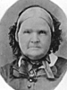

The Family of Alexander and Jane Ann Dutson Melville
Home
Histories
Charts
Photos
Maps
Restricted
News
Info
Contact
| <--(return)-- |    | John Dutson and Ann Green  |
----> | 
| Jane Ann Dutson and Alexander Melville |
| * | John William Melville - 1st child, 21 Jun. 1849 - 24 Feb 1850 |
|
James Andrew Melville 3 Mar. 1852 - 24 Dec. 1926 The 2nd child of Alexander and Jane Ann Dutson Melville |
|
Mary Jane Melville 4 June 1854 - 1 Jan. 1929 The 3rd child of Alexander and Jane Ann Dutson Melville |
|
Ann Elizabeth Melville 20 May 1856 - 13 Feb. 1949 The 4th child of Alexander and Jane Ann Dutson Melville |
|
Brigham Melville 15 Mar. 1858 - 15 Nov. 1921 Married Savalla Bishop 31 Dec. 1877 The 5th child of Alexander and Jane Ann Dutson Melville |
|
Francis Cannon Melville 1 May 1860 - 21 Sep. 1942 The 6th child of Alexander and Jane Ann Dutson Melville |
|
Daniel Dutson Melville 31 Dec. 1862 - 23 Jan. 1950 The 7th child of Alexander and Jane Ann Dutson Melville |
|
Eleanor Green Melville 20 May 1865 - 1 Mar. 1948 The 8th child of Alexander and Jane Ann Dutson Melville |
|
Joseph Mathew Melville 6 Aug. 1867 - 12 June 1939 The 9th child of Alexander and Jane Ann Dutson Melville |
|
David Alexander Melville 24 Aug. 1869 - 1 Jan. 1949 The 10th child of Alexander and Jane Ann Dutson Melville |
|
George Edward Melville 26 Jan. 1873 - 16 Sep. 1954 The 11th child of Alexander and Jane Ann Dutson Melville |